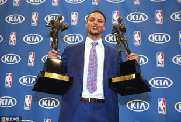
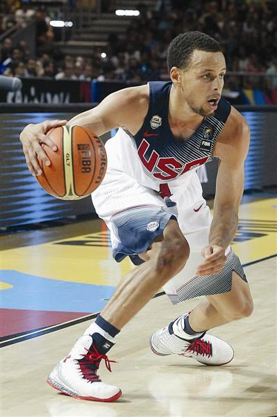
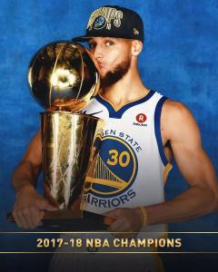
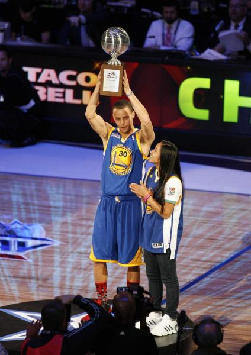

斯蒂芬·库里
斯蒂芬·库里（Stephen Curry，1988年3月14日-），出生于俄亥俄州阿克伦，美国男子篮球运动员，司职控球后卫，现效力于NBA金州勇士队，绰号“萌神”，与队友
汤普森
合称“水花兄弟”。
其控球娴熟，擅长投射三分，是一名投射能力极为出众的控卫。他2009年被金州勇士队选中进入
NBA
，随队开启了联盟小球时代，是一名划时代的篮球运动员，职业生涯3次获得总冠军，2次荣膺常规赛MVP，6次入选最佳阵容（3次一阵、2次二阵、1次三阵），6次入选全明星，帮助美国男篮夺得2010年世锦赛和2014年世界杯冠军。
2021年2月12日，在勇士111-105击败魔术的比赛后，库里连续8场比赛以50%的命中率砍下25+得分，追平
张伯伦
，并列勇士队史第一。
1.NBA生涯
2.国家队经历
3.荣誉记录
4.人物评价
1.NBA生涯
2020-21赛季
2020年12月，勇士对阵雄鹿的比赛中，斯蒂芬-库里的勇士队史得分来到16454分，成为勇士队史得分榜第二位。[276]
2020年12月28日，在勇士对阵公牛的比赛中，斯蒂芬-库里常规赛三分命中数来到2500个。[277]
2020年12月28日，勇士今天以129-128险胜公牛，库里凭借本场的5记三分，个人生涯三分命中数突破2500记，排在历史第三位。[278]
2021年1月4日，勇士137-122力克开拓者，库里砍下生涯新高62分，同时本场比赛19罚18中，罚球出手和命中数也均为生涯新高。[279]
2021年1月，勇士对阵湖人，这是斯蒂芬-库里第712场常规赛比赛，升至勇士队史第5位。[280]
2021年1月24日，勇士对阵爵士，库里命中4记三分，算上这4记三分，他的生涯常规赛三分命中数来到2561记，独占历史第二位。[281]
2021年1月28日，勇士主场123-111击败森林狼，库里得到16分。算上今天的比赛，库里已经代表勇士出战了717场常规赛比赛，升至队史第三。[282]
2021年2月3日，勇士迎战凯尔特人，库里已经得到了32分，至此。库里生涯常规赛总得分来到了17005分，排队史上第二。[283]
2021年2月5日，在勇士147-116大胜独行侠的比赛中，库里成为2020-21赛季全联盟中第一位能够在22场比赛中命中100记三分球的球员。[284]
2021年2月7日，在勇士132-134负于独行侠的比赛中，库里NBA生涯常规赛三分球命中数突破2600个；[285]并成为勇士队史上第二个能够在一个赛季中拿到多次单场55+分的球员；同时生涯第九次单场命中11个三分，刷新历史记录；[286]连续84场比赛至少投进1个三分球，成为现NBA新的最长纪录；[287]生涯第16场比赛至少投进10个三分球，创造NBA纪录。[288]

2021年2月10日，勇士114-91击败马刺后，32岁的库里在2020-21赛季前25场比赛中累计得到741分，仅次于乔丹；[289]同时连续第12场至少命中4记三分，追平生涯纪录；2020-21赛季19场至少命中4记三分、累计得到741分、累计命中121记三分，均为第一。[290]
截至2021年2月12日，在勇士111-105击败魔术的比赛后，库里2020-21赛季出战了勇士2020-21赛季的全部26场比赛，总得分781分、运动战进球总数259个、三分球命中总数131个，均排联盟第一；[291]连续8场比赛以50%的命中率砍下25+得分，追平张伯伦，并列勇士队史第一。[292]
2.国家队经历
2010年8月25日，美国男篮出征土耳其世锦赛12人名单正式公布，斯蒂芬·库里入选。[293]
2010年9月13日，美国队在决赛中以81-64击败土耳其队，时隔16年重夺世锦赛冠军。[294]
2014年7月14日，美国男篮国家队在官方推特上公布了7月底在拉斯维加斯的19人迷你训练营名单，斯蒂芬·库里入选。[295]
2014年8月23日，斯蒂芬·库里入选美国男篮参加世界杯的12人大名单。[296]
2014年9月15日，美国男篮以129-92击败塞尔维亚，夺得了首届男篮世界杯的冠军，斯蒂芬·库里在本届世界杯场均出场20.1分钟，贡献10.7分、1.6个篮板和2.9次助攻。[297][298]

3.荣誉记录
NBA总决赛
▪2018 2017-18赛季NBA总冠军 （获奖）
▪2017 2016-17赛季NBA总冠军 （获奖）
▪2015 2014-15赛季NBA总冠军 （获奖）
NBA常规赛
2019 NBA2018-19赛季年度最佳阵容（一阵）（获奖）
▪2018 2017-18赛季最佳阵容第三阵容[305] （获奖）
▪2017 2016-17赛季最佳阵容第二阵容 （获奖）
▪2016 2015-16赛季常规赛MVP （获奖）
▪2016 2015-16赛季常规赛得分王+抢断王 （获奖）
▪2016 2015-16赛季最佳阵容第一阵容 （获奖）
▪2015 2014-15赛季常规赛MVP （获奖）
▪2015 2014-15赛季最佳阵容第一阵容 （获奖）
▪2014 2013-14赛季最佳阵容第二阵容 （获奖）
▪2010 2009-10赛季最佳新秀第一阵容 （获奖）
NBA全明星
▪2018 2018年全明星西部首发阵容 （获奖）
▪2017 2017年全明星西部首发阵容 （获奖）
▪2016 2016年全明星西部首发阵容 （获奖）
▪2015 2015年全明星西部首发阵容 （获奖）
▪2015 2015年全明星三分球大赛冠军 （获奖）
▪2014 2014年全明星西部首发阵容 （获奖）
▪2011 2011年全明星技巧挑战赛冠军 （获奖）
国家队荣誉
▪2014 西班牙篮球世界杯冠军 （获奖）
▪2010 土耳其世锦赛冠军 （获奖）
其他荣誉
2019 ESPN2019年年度最出名运动员 （获奖）
2019 国际体育记者协会（AIPS）2019年全球最佳男运动员（提名）
2019 2019BET奖年度最佳男运动员 （获奖）
▪2016 2016年青少年选择奖最佳男性运动员 （获奖）
▪2015 2015年ESPY最佳男运动员奖和最佳NBA运动员奖 （获奖）
▪2015 美联社2015年最佳男运动员 （获奖）
▪2015 《体育画报》2015年度NBA最佳球员 （获奖）


4.人物评价
斯蒂芬·库里擅长运球急停跳投，投篮可以覆盖整个半场。控球出色，可以在一对一通过控球找到出手机会，大量三分来自干拔。由于身体单薄，库里并不容易进入到禁区，打法缺少侵略性。库里并不是真正的传统控卫，但他投射威慑力太大，很容易吸引对手防守夹击，库里创造队友得分机会能力很强。但库里也容易失误，有时会冒险传球。防守端，库里因身体太瘦弱，需要保护，但库里速度很快，出手迅捷，防守效果不错。[326]（新浪体育评）
斯蒂芬·库里的技术相当全面，可以自己运球创造出手机会，也能够跑动后接球跳投，定点投篮更是没问题，将这些能力结合在一起，这就是他的特别之处。（勇士主教练
马克·杰克逊
评）
斯蒂芬·库里是联盟现役最好的后卫之一，非常好的投手，勇士之所以这么棒，他是很重要的一个原因。[327]（NBA名宿
查尔斯·巴克利
评）
斯蒂芬·库里是联盟新生代控卫的代表，他是联盟中投篮能力最出色的控卫之一。[328]（搜狐体育评）
斯蒂芬·库里是NBA头牌射手，有望挑战历史最佳；运动能力平平，突破不多，容易冒险传球；防守被低估。[329]（新浪体育评）
更多内容可以百度一下